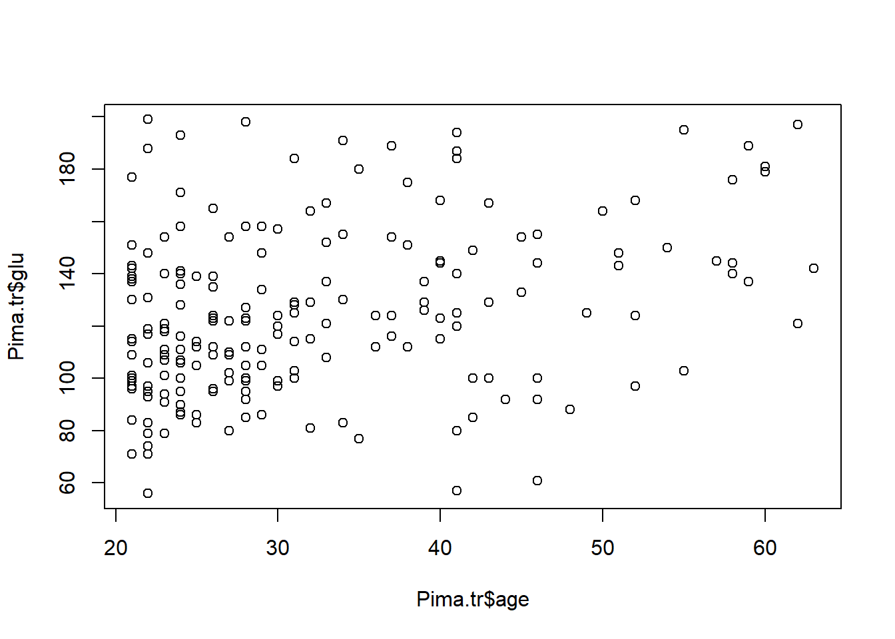
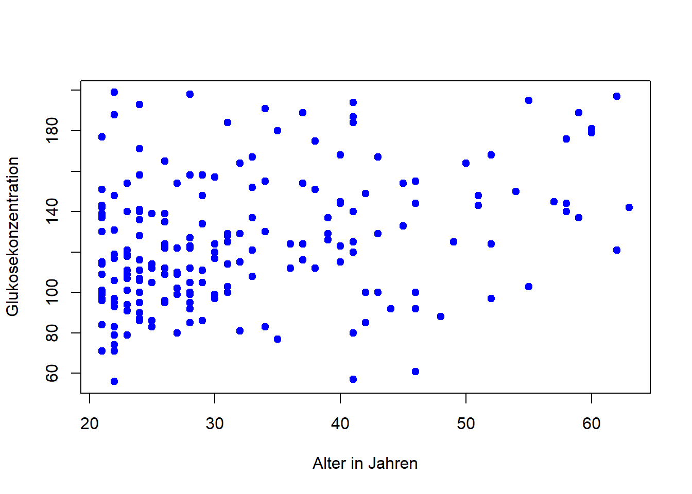
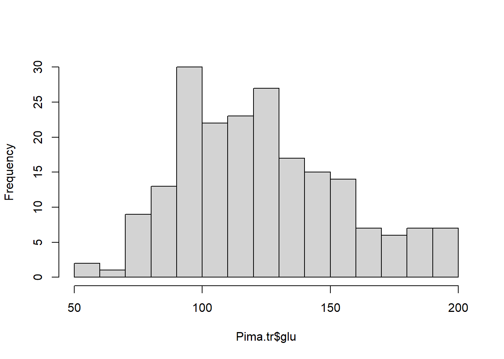
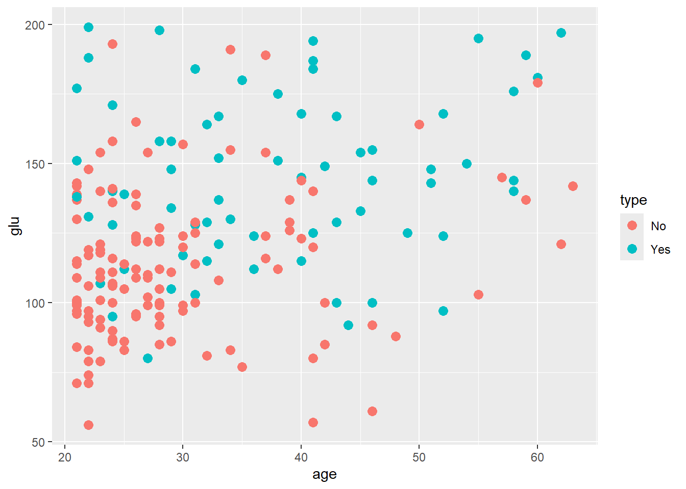
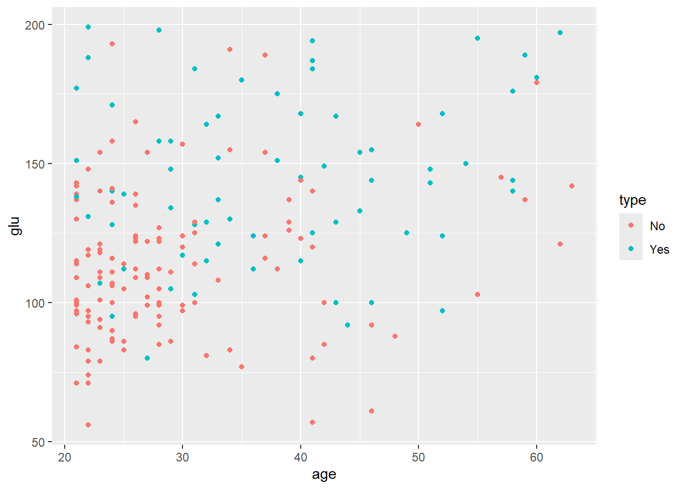
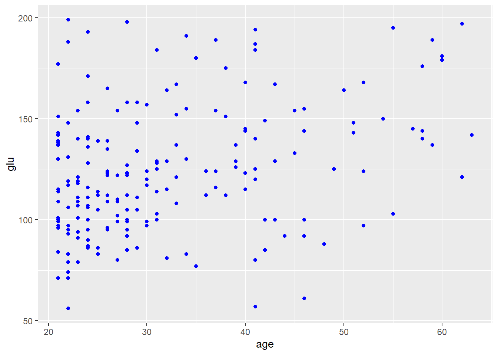

Dieses Kapitel orientiert sich am Kapitel Data visualization aus Modern Statistics for Modern Biology. Die Beispiele verwenden ähnliche beziehungsweise teilweise dieselben Daten: insbesondere den in R enthaltenen Datensatz DNase sowie eine kleine Gruppentabelle, die an die im Kapitel verwendeten Maus-Embryo-Gruppen angelehnt ist.
Lernziele
Nach diesem Kapitel können Sie:
den Unterschied zwischen explorativer und erklärender Datenvisualisierung beschreiben,
einfache Grafiken mit ggplot2 erstellen,
die Grundidee der Grammar of Graphics erklären,
Variablen auf visuelle Eigenschaften wie Position, Farbe, Form oder Größe abbilden,
geeignete Diagrammtypen für eindimensionale und zweidimensionale Daten auswählen,
Facetten, Farben, Achsenskalierungen und Themes gezielt einsetzen,
Grafiken reproduzierbar speichern.
1. Warum Daten visualisieren?
Datenvisualisierung hat in der Statistik und Datenanalyse zwei zentrale Aufgaben.
Erstens hilft sie bei der Exploration. Bevor formale Modelle oder Tests eingesetzt werden, können Grafiken zeigen, welche Muster, Ausreißer, Gruppenunterschiede oder Zusammenhänge in den Daten vorhanden sind.
Zweitens dient Visualisierung der Kommunikation. Eine gute Grafik fasst eine Aussage so zusammen, dass andere sie schnell verstehen können. Dabei geht es nicht nur darum, eine „schöne“ Grafik zu erzeugen, sondern darum, eine inhaltliche Aussage klar und ehrlich zu vermitteln.
Beispielhafte Fragen, die man mit Visualisierungen untersuchen kann:
Wie ist eine Variable verteilt?
Gibt es Ausreißer?
Hängen zwei Variablen zusammen?
Unterscheiden sich Gruppen voneinander?
Gibt es nichtlineare Zusammenhänge?
Gibt es Muster, die in einer Tabelle schwer erkennbar wären?
2. Erstes Beispiel: Patientendaten aus der Medizin
Für den Einstieg verwenden wir einen echten medizinischen Beispieldatensatz: Pima.tr aus dem Paket MASS. Der Datensatz enthält Gesundheitsdaten von Frauen des Pima-Volks nahe Phoenix. Er wird häufig für Beispiele zur Diabetesklassifikation verwendet.
Jede Zeile beschreibt eine Person mit mehreren medizinischen Messwerten, darunter Alter, Body-Mass-Index, Blutdruck, Glukosewert und Diabetesstatus.
library(MASS)data(Pima.tr)head(Pima.tr)
npreg glu bp skin bmi ped age type
1 5 86 68 28 30.2 0.364 24 No
2 7 195 70 33 25.1 0.163 55 Yes
3 5 77 82 41 35.8 0.156 35 No
4 0 165 76 43 47.9 0.259 26 No
5 0 107 60 25 26.4 0.133 23 No
6 5 97 76 27 35.6 0.378 52 Yes
Der Datensatz enthält unter anderem:
Variable
Bedeutung
npreg
Anzahl der Schwangerschaften
glu
Glukosekonzentration
bp
diastolischer Blutdruck
skin
Hautfaltendicke
bmi
Body-Mass-Index
ped
Diabetes-Pedigree-Funktion
age
Alter in Jahren
type
Diabetesstatus: Yes oder No
Mit str() können Sie sich die Struktur des Datensatzes ansehen:
Gibt es in diesen Daten einen Zusammenhang zwischen Alter, Glukosewert und Diabetesstatus?
Dieser Datensatz ist klein genug für den Einstieg, aber realistisch genug, um typische Visualisierungsfragen aus der medizinischen Datenanalyse zu behandeln. Für die späteren Beispiele verwenden wir zusätzlich den Datensatz DNase, der in R enthalten ist und stärker an das Beispielkapitel angelehnt ist.
3. Erste Grafiken mit Base R
R besitzt eingebaute Grafikfunktionen, zum Beispiel plot(), hist() oder boxplot().
plot(Pima.tr$age, Pima.tr$glu)

Dieser Plot zeigt den Zusammenhang zwischen Alter und Glukosewert. Die Darstellung ist schnell erstellt, aber noch wenig beschriftet.
Eine etwas bessere Variante ist:
plot( Pima.tr$age, Pima.tr$glu,xlab ="Alter in Jahren",ylab ="Glukosekonzentration",pch =19,col ="blue")

Auch Histogramme und Boxplots sind mit Base R möglich:
hist(Pima.tr$glu, breaks =20, main ="")

boxplot(glu ~ type, data = Pima.tr)
Das Histogramm zeigt die Verteilung der Glukosewerte. Der Boxplot vergleicht die Glukosewerte zwischen Personen mit und ohne Diabetesdiagnose.
Base R eignet sich gut für schnelle explorative Grafiken. Sobald Grafiken aber komplexer werden, zum Beispiel mit mehreren Gruppen, Farben, Legenden, Achsenanpassungen und Teilgrafiken, wird der Code oft unübersichtlich.
4. Von Base R zu ggplot2
ggplot2 verfolgt einen anderen Ansatz. Man beschreibt nicht Schritt für Schritt, wo etwas gezeichnet wird, sondern formuliert, welche Variablen wie dargestellt werden sollen.
Zuerst laden wir das Paket:
library(ggplot2)
Warning: Paket 'ggplot2' wurde unter R Version 4.4.3 erstellt
Der einfache Scatterplot aus Base R sieht in ggplot2 so aus:
ggplot(Pima.tr, aes(x = age, y = glu)) +geom_point()
Dieser Code bedeutet:
Verwende den Datensatz Pima.tr.
Trage age auf der x-Achse ab.
Trage glu auf der y-Achse ab.
Stelle die Beobachtungen als Punkte dar.
5. Die Grundidee von ggplot2
Das Paket ggplot2 basiert auf der Idee der Grammar of Graphics. Eine Grafik besteht aus mehreren Komponenten.
Komponente
Bedeutung
Daten
Der Datensatz, der visualisiert werden soll
Ästhetiken
Zuordnung von Variablen zu visuellen Eigenschaften
Geometrien
Die Art der Darstellung, z. B. Punkte, Linien, Balken
Statistiken
Berechnungen auf den Daten, z. B. Zählen, Glätten oder Binning
Skalen
Umsetzung von Datenwerten in Achsen, Farben oder Größen
Koordinaten
Koordinatensystem, meistens kartesisch
Facetten
Aufteilung in mehrere Teilgrafiken
Theme
Gestaltung, z. B. Schriftgrößen, Hintergrund, Legende
Ein einfacher ggplot besteht meistens aus drei Teilen:
ggplot(data = DATENSATZ, aes(x = VARIABLE1, y = VARIABLE2)) +geom_...()
Beispiel:
ggplot(data = Pima.tr, aes(x = age, y = glu)) +geom_point()
6. Ästhetiken: Variablen sichtbar machen
Die Funktion aes() beschreibt, welche Variable auf welche visuelle Eigenschaft abgebildet wird.
ggplot(Pima.tr, aes(x = age, y = glu)) +geom_point()
Hier werden zwei Variablen verwendet:
age: Position auf der x-Achse
glu: Position auf der y-Achse
Zusätzlich kann eine dritte Variable über Farbe dargestellt werden:
ggplot(Pima.tr, aes(x = age, y = glu, color = type)) +geom_point(size =3)

Hier zeigt die Farbe den Diabetesstatus (type).
Typische Ästhetiken sind:
Ästhetik
Bedeutung
x
Position auf der x-Achse
y
Position auf der y-Achse
color
Farbe von Linien oder Punkten
fill
Füllfarbe, z. B. bei Balken oder Boxplots
shape
Symbolform
size
Größe
alpha
Transparenz
linetype
Linientyp
Wichtig ist die Unterscheidung zwischen Eigenschaften innerhalb und außerhalb von aes().
Wenn eine Eigenschaft von einer Variable abhängen soll, steht sie innerhalb von aes():
ggplot(Pima.tr, aes(x = age, y = glu, color = type)) +geom_point()

Wenn eine Eigenschaft für alle Punkte gleich sein soll, steht sie außerhalb von aes():
ggplot(Pima.tr, aes(x = age, y = glu)) +geom_point(color ="blue")

7. Geometrien: Wie sollen die Daten dargestellt werden?
Die Geometrie legt fest, welche grafischen Objekte verwendet werden.
Punktdiagramm
Punktdiagramme eignen sich gut, um den Zusammenhang zwischen zwei metrischen Variablen zu untersuchen.
ggplot(DNase, aes(x = conc, y = density)) +geom_point()
Interpretation: Mit steigender Konzentration steigt tendenziell auch die optische Dichte. Der Zusammenhang ist aber nicht einfach linear, sondern flacht bei höheren Konzentrationen ab.
Liniendiagramm
Da die Messungen innerhalb eines Versuchslaufs bei verschiedenen Konzentrationen durchgeführt wurden, kann man die Punkte pro Run auch verbinden.
ggplot(DNase, aes(x = conc, y = density, group = Run)) +geom_line() +geom_point()
Hier ist group = Run wichtig: Dadurch weiß ggplot2, welche Punkte miteinander verbunden werden sollen.
Histogramm
Ein Histogramm zeigt die Verteilung einer metrischen Variable.
Die Wahl der Klassenanzahl oder Klassenbreite beeinflusst die Darstellung. Eine zu feine Einteilung erzeugt ein unruhiges Bild, eine zu grobe Einteilung kann wichtige Muster verdecken.
Ein Dichteplot ist eine geglättete Darstellung einer Verteilung.
ggplot(DNase, aes(x = density)) +geom_density()
Dichteplots eignen sich besonders, wenn man mehrere Verteilungen vergleichen möchte.
ggplot(DNase, aes(x = density, color = Run)) +geom_density()
Boxplot
Boxplots eignen sich, um Verteilungen zwischen Gruppen zu vergleichen.
ggplot(DNase, aes(x = Run, y = density)) +geom_boxplot()
Dabei wird für jeden Versuchslauf die Verteilung der optischen Dichte zusammengefasst.
8. Layer: Grafiken schrittweise aufbauen
Ein großer Vorteil von ggplot2 ist, dass Grafiken aus mehreren Layern bestehen können.
ggplot(DNase, aes(x = conc, y = density)) +geom_point() +geom_smooth()
Hier werden zwei Darstellungen kombiniert:
geom_point() zeigt die einzelnen Beobachtungen.
geom_smooth() ergänzt eine geglättete Trendlinie.
Da der Zusammenhang in den DNase-Daten nichtlinear ist, passt eine geglättete Linie oft besser zur Exploration als eine einfache Gerade.
Zum Vergleich kann man trotzdem eine lineare Regressionsgerade einzeichnen:
ggplot(DNase, aes(x = conc, y = density)) +geom_point() +geom_smooth(method ="lm")
Das ist didaktisch interessant: Man sieht, dass die lineare Gerade den gekrümmten Verlauf nur unzureichend beschreibt.
9. Achsen und Transformationen
Die Konzentration in den DNase-Daten nimmt Werte an, die nicht gleichmäßig über die Skala verteilt sind. In solchen Fällen kann eine logarithmische Achse sinnvoll sein.
ggplot(DNase, aes(x = conc, y = density)) +geom_point() +scale_x_log10()
Mit einer logarithmischen x-Achse werden kleine Konzentrationen besser sichtbar. Wichtig ist: Die Daten selbst werden dadurch nicht verändert. Verändert wird die Darstellung der Achse.
Eine häufige Variante kombiniert logarithmische Achse, Punkte und Glättung:
Farbe sollte eine inhaltliche Funktion haben. In den DNase-Daten kann Farbe verwendet werden, um die einzelnen Versuchsläufe zu unterscheiden.
ggplot(DNase, aes(x = conc, y = density, color = Run)) +geom_point() +scale_x_log10()
Man kann zusätzlich Linien pro Versuchslauf ergänzen:
ggplot(DNase, aes(x = conc, y = density, color = Run, group = Run)) +geom_line() +geom_point() +scale_x_log10()
Grundregeln für Farbe:
Verwenden Sie Farbe sparsam.
Verwenden Sie Farbe für Bedeutung, nicht nur zur Dekoration.
Achten Sie auf Lesbarkeit.
Nutzen Sie für Gruppen diskrete Farben.
Nutzen Sie für metrische Werte kontinuierliche Farbskalen.
Vermeiden Sie unnötig viele Gruppenfarben.
11. Eine zweite Beispieltabelle: biologische Gruppen
Im Beispielkapitel wird zusätzlich ein komplexerer Datensatz aus der Entwicklungsbiologie verwendet. Damit Sie ähnliche Plots nachvollziehen können, ohne direkt ein Bioconductor-Paket installieren zu müssen, verwenden wir hier eine kleine manuell angelegte Gruppentabelle.
ggplot(groups, aes(x = sampleGroup, y = n, fill = sampleGroup)) +geom_col() +scale_fill_manual(values = groupColor, name ="Gruppe") +theme(axis.text.x =element_text(angle =90, hjust =1))
Wenn die Farben bereits im Datensatz vorgegeben sind, ist eine manuelle Skala sinnvoll. Ohne scale_fill_manual() würde ggplot2 automatisch eigene Farben wählen.
14. Faceting: Teilgrafiken nach Gruppen
Faceting erzeugt mehrere kleine Grafiken nach demselben Prinzip. Das ist besonders hilfreich, wenn man Gruppen vergleichen möchte.
Bei den DNase-Daten können wir für jeden Versuchslauf eine eigene Teilgrafik erzeugen:
Dadurch erkennt man besser, ob sich einzelne Versuchsläufe auffällig anders verhalten.
Faceting ist oft besser als zu viele Farben in einer einzigen Grafik, weil es Überlagerungen reduziert.
15. Beschriftungen und Titel
Eine gute Grafik braucht verständliche Beschriftungen.
ggplot(DNase, aes(x = conc, y = density, color = Run, group = Run)) +geom_line() +geom_point() +scale_x_log10() +labs(title ="DNase-Assay: Zusammenhang zwischen Konzentration und optischer Dichte",subtitle ="Messungen aus mehreren Versuchsläufen",x ="Konzentration (log10-Skala)",y ="Optische Dichte",color ="Versuchslauf" )
Beschriftungen sollten nicht einfach Variablennamen wiederholen, sondern für Leserinnen und Leser verständlich sein.
Schlecht:
x ="conc"y ="density"
Besser:
x ="Konzentration"y ="Optische Dichte"
16. Themes: Gestaltung der Grafik
Themes steuern das Aussehen einer Grafik.
ggplot(DNase, aes(x = conc, y = density)) +geom_point() +theme_minimal()
Für Berichte und wissenschaftliche Arbeiten sind PDF-Dateien oft sinnvoll, weil sie vektorbasiert sind. Für Webseiten oder Präsentationen werden häufig PNG-Dateien verwendet.
19. Beispiel: Eine Grafik schrittweise verbessern
Schritt 1: Einfacher Scatterplot
ggplot(DNase, aes(x = conc, y = density)) +geom_point()
Schritt 2: Logarithmische x-Achse ergänzen
ggplot(DNase, aes(x = conc, y = density)) +geom_point() +scale_x_log10()
Schritt 3: Versuchsläufe farblich unterscheiden
ggplot(DNase, aes(x = conc, y = density, color = Run)) +geom_point() +scale_x_log10()
Schritt 4: Punkte pro Versuchslauf verbinden
ggplot(DNase, aes(x = conc, y = density, color = Run, group = Run)) +geom_line() +geom_point() +scale_x_log10()
Schritt 5: Beschriftungen und Theme ergänzen
ggplot(DNase, aes(x = conc, y = density, color = Run, group = Run)) +geom_line() +geom_point() +scale_x_log10() +labs(title ="DNase-Assay: Konzentration und optische Dichte",subtitle ="Mehrere Versuchsläufe im Vergleich",x ="Konzentration (log10-Skala)",y ="Optische Dichte",color ="Versuchslauf" ) +theme_minimal()
20. Optional: Arbeiten mit dem originalen Bioconductor-Datensatz
Im Beispielkapitel wird der Bioconductor-Datensatz Hiiragi2013 verwendet. Falls Sie mit den originalen Daten arbeiten möchten, können Sie das Paket installieren.
if (!requireNamespace("BiocManager", quietly =TRUE)) {install.packages("BiocManager")}BiocManager::install("Hiiragi2013")
Danach können die Daten geladen werden:
library(Hiiragi2013)data("x")
Die Expressionsmatrix kann mit Biobase::exprs(x) abgerufen werden: